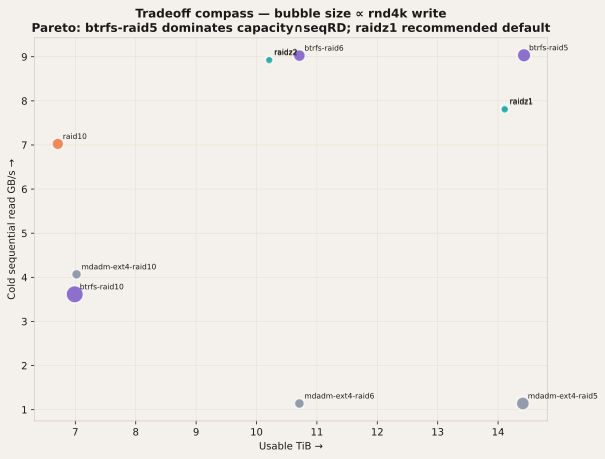
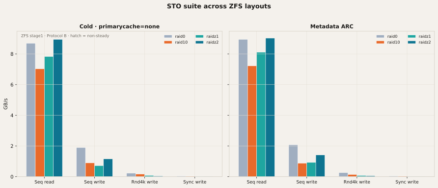
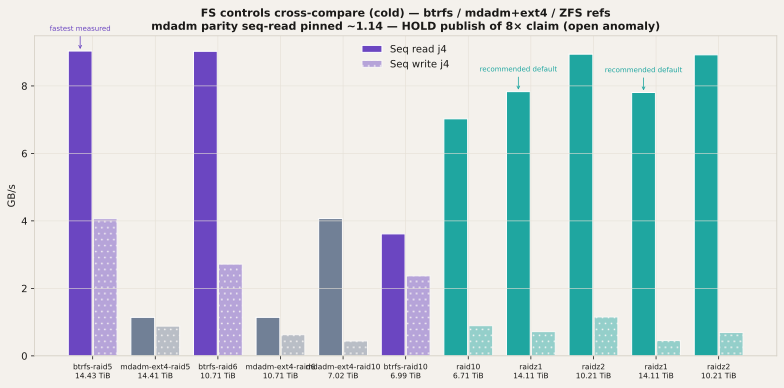
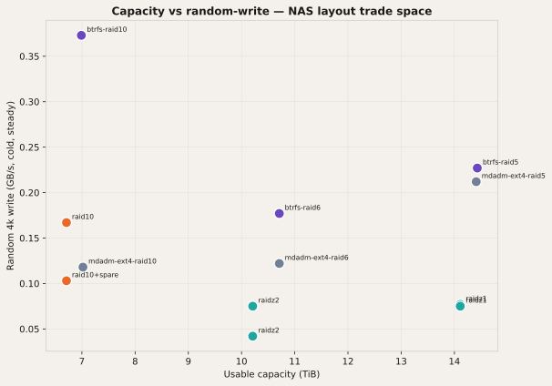
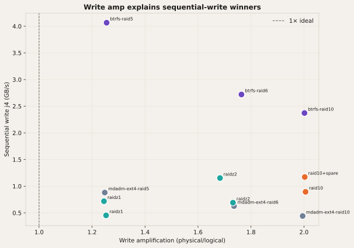
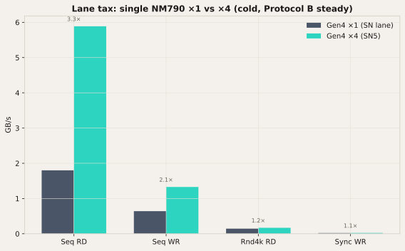
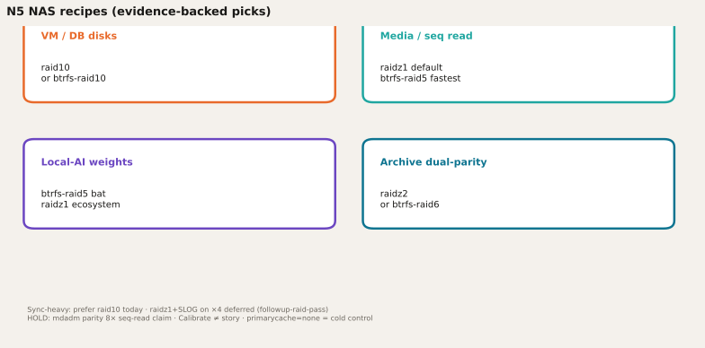
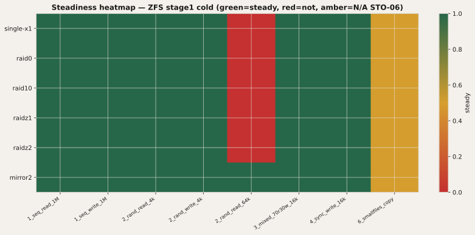
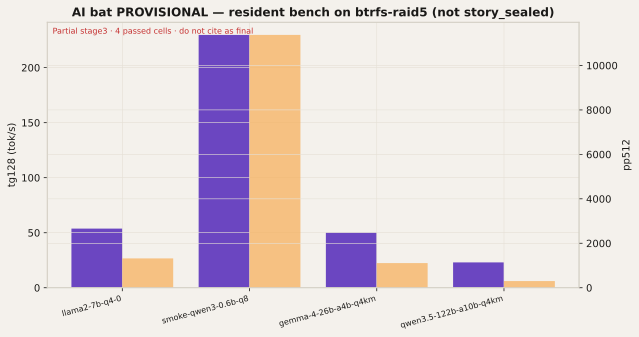

FASTEST MEASURED
btrfs-raid5
14.43 TiB · 9.03 GB/s seqRD
Cold FS-control · 2026-09-14-13.57-fscontrol.dendrite-sut
Tiered local-AI NAS · Minisforum N5 MAX · 2026-09
Hot-tier multi-NVMe (Gen4 ×1 array lanes + one ×4) + 128 GB unified memory + cold SATA. From sealed Protocol B cells: btrfs-raid5 is the Pareto winner on capacity∩sequential read; raidz1 is the recommended default for Proxmox/ZFS users. Cold control = primarycache=none. Calibrate mode is not the story.
FASTEST MEASURED
14.43 TiB · 9.03 GB/s seqRD
Cold FS-control · 2026-09-14-13.57-fscontrol.dendrite-sut
RECOMMENDED DEFAULT
14.11 TiB · 7.83 GB/s seqRD
Cold ZFS stage1 · 2026-09-13-17.14-storage.dendrite-sut
Compare · sealed Protocol B
Every plotted point is Protocol B with steady=true (STO-06 wall-clock labeled N/A). Hatch / amber marks non-steady. mdadm parity seq-read is shown but not framed as an 8× filesystem finding — open anomaly.






Recipes · real-world N5 NAS

raid10 (ZFS) or btrfs-raid10
Mirror random-write path; cold rnd4kW and mixed beat raidz on ZFS stage1
raidz1 (recommended) or btrfs-raid5 (fastest)
Near line-rate seq read + capacity; raidz1 14.11 TiB @ 7.83 GB/s; btrfs-raid5 14.43 TiB @ 9.03
btrfs-raid5 (bat) / raidz1 (default ecosystem)
AI bat stresses sequential read of multi-hundred-GB trees; capacity-first Pareto
raidz2 or btrfs-raid6
Dual parity; seq read still near ceiling; capacity trade 10.2–10.7 TiB
raid10 today; raidz1+SLOG deferred
ZFS raidz sync ~0.007 GB/s vs raid10 0.027; SLOG on x4 predicted ~2.9× on STO-04 only
Sync-heavy today → raid10. raidz1+SLOG on the Gen4 ×4 is deferred (predicted ~2.9× on STO-04 only; falsifier if reads move). NM790 has no PLP — durability caveat stays in the writeup.
Methodology

Matrix live status → matrix/
AI · PROVISIONAL
Four passed cells so far; several failed/geometry mismatches. Treat tok/s as directional only. Bannered until the bat completes and seals.

| model | pp512 | tg128 |
|---|---|---|
| llama2-7b-q4-0 | 1319.7 | 53.71 |
| smoke-qwen3-0.6b-q8 | 11374.3 | 229.74 |
| gemma-4-26b-a4b-q4km | 1108.5 | 50.02 |
| qwen3.5-122b-a10b-q4km | 299.5 | 23.02 |
Non-obvious joins
Follow
Matrix UI tracks cell status. M.2 lab visualizes seats. Design Exploration owns a composition pass after this PR.